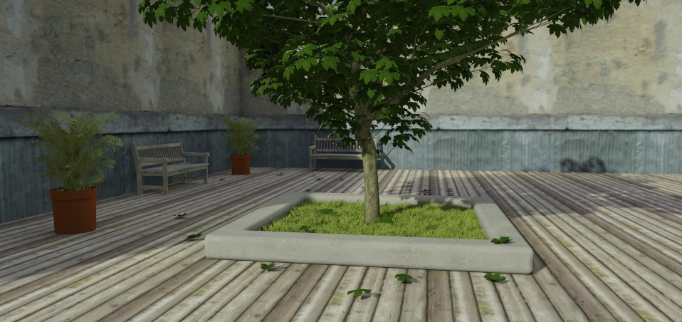

We are pleased to announce the next generation Brighter3D – the major 2.0 version.
This new stage in Brighter3D’s evolution is based on several innovations and user experience improvements, which we hope will make your renderings a snap. Well, of course rendering is a quality game, but in this respect, we empowered you in this version with tools and algorithms which will truly make your efforts a breeze.
What’s up:
• A new, innovative, Unbiased Progressive Rendering Mode (UPRM) which allows you to render a preview in some seconds and then in iterative steps, a great image in minutes. You can then stop the rendering when the quality suits you for the purpose – a bright and smart way of rendering!
• A completely new way of mapping a HDR Environment Map, which makes you feel like you are inside the scene. It matches your scene not only with Rotation, but also with Pan/Move.
• Capability to load HDR/EXR images in Effects Studio (PRO Version only).
• Capability to scale HDR maps (PRO Version only). An excellent way to make truly realistic renderings by matching scale of objects with the environment.
• Lights now have Temperature in Kelvins. You can mix different temperature lights in a scene, giving a touch of authenticity and realism.
• New Shadow Catcher material, which can fine-tune a shadow in a given scene at unprecedented realistic levels.
• New Faces Rotation Tool. Previously, Brighter3D attempted to automatically fix wrongly oriented faces in Sketchup – an widespread known problem in Sketchup in conjunction with rendering programs. Now this tool is doing its job on a user voluntary command, giving full control to the final result in an efficient way.
• Full direct animation from Sketchup Tabs, with Parametric Animation.
Supports: Keyframe Animation, and any other animation plugin that can export to Tabs)
• Tweaks in the user interface graphics and experience.
• IMPORTANT! All these new gems are given as a free upgrade for all PRO Version users!
PLEASE NOTE:
As mentioned, from this version Brighter3D is no longer fixing wrong oriented faces on the fly, you will need to take care of that by yourself.
We’ve prepared a video with the new features, please enjoy in Full HD @1080 below:
2:58 PM Saturday, 20 September 2014 (UTC) (update 2.0.2)
– caustics for regular method
– color of daylight background
– automatic check for updates (once a day)

– support for transparent textures
– support for textured glass color propagation
– problem with locking SketchUp keyboard shortcuts with brighter window opened is now fixed
– possibility to scale hdr map horizontal view angle
– transform all transparent materials into default glass (new menu option)
5:01 PM Friday, 06 June 2014 (UTC) (update 1.16.1)
– transparent textures loading crash fix
– installer: SU version selection
– installer: checks if SU is open during installation process
11:33 PM Sunday, 22 June 2014 (UTC) (update 1.16.2)
– common options in tone mappers: dither and vignetting
– new effect: bloom